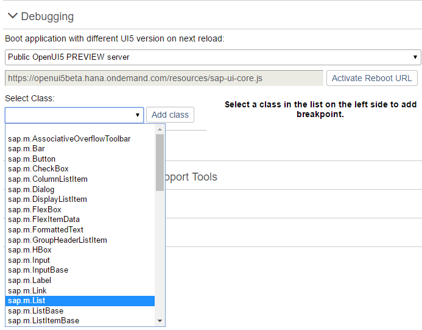

Debugging
Debugging
For information on browser debugging for ABAP developers, see Browser Debugging for ABAP Developers.
Loading Debug Sources
Loading Debug Sources
For debugging, you first have to load the Debug Sources. You have the following options:
URL parameter
sap-ui-debug=trueSelect the Use Debug Sources in the Technical Information Dialog
For more information, see Technical Information Dialog.
If you only want to load the debug sources for specific packages, you have the following options:
Add the module names to the
sap-ui-debugURL parameter, separated by a comma. For example,sap-ui-debug=sap/ui/core/Core.js,sap/m/InputType.jsloads the debug sources for thesap.ui.core.Coreandsap.m.InputTypelibraries.Choose the Select specific modules link in the Technical Information Dialog.
For more information, see Technical Information Dialog.
After reloading the page, in the Network tab of the browser’s developer tools you can see that the controls and framework assets are now loaded individually and have a -dbg suffix. These are the source code files that include comments, the uncompressed code of the app, and the SAPUI5 artifacts.
Choose Ctrl O (Windows) or Command O (macOS) and type the name of an SAPUI5 artifact to view its source code in debug mode.
Turning on debug sources also increases the log level. For more information, see Logging and Tracing.
To improve performance, you must deactivate the debug sources once you're done with debugging.
Switching the SAPUI5 Version
Switching the SAPUI5 Version
Open the Diagnostics window with the shortcut CTRLSHIFTALTS.
At the top of the Debugging view, you can configure a custom URL from which the application should load SAPUI5 the next time that the app opens.
Either select a known SAPUI5 installation from the dropdown box, or enter a different URL that points to the sap-ui-core.js file within a complete SAPUI5 runtime.
Once you have entered the URL, press Activate Reboot URL. When you then reload the application page, the application loads SAPUI5 from the alternative URL. This only happens for the next single reboot; after that, SAPUI5 is loaded again from the standard URL referenced within the app.
This feature can be used to test an application against a newer or older version of SAPUI5 as part of compatibility testing, or for verifying a bug fix or regression.
Setting Breakpoints
Setting Breakpoints
For more information, see Diagnostics.
Breakpoints on the Class Level
Breakpoints on the Class Level
Open the Debugging view of the Diagnostics window.
Select a class from the dropdown list or enter the name of the class and choose Add Class.
The selected class is now visible below the dropdown list.
The number next to the method name shows the number of methods that belong to the class and the number of methods for which a breakpoint is set.
Select the class. On the right side of the view, you can now select methods of the selected class from a dropdown list.
From the dropdown list, select the method for which you want to set the breakpoint and choose Add breakpoint.
The selected methods are listed below the dropdown list.
Open the developer tools of your browser. Whenever the selected methods are called for any instance of the selected control, the code execution is paused in the debugger.

In the call stack you find the method for which you set a breakpoint.

To remove a breakpoint, select the red x.
Breakpoints on the Object Level
Breakpoints on the Object Level
Open the Control Tree view of the Diagnostics window.
Select a control in the tree.
You can also press and hold CtrlShiftAlt and select a control in your app to select it in the tree.
Select the Breakpoints tab on the right.
From the dropdown list, select the method for which you want to set the breakpoint and choose Add breakpoint.
The selected methods are listed below the dropdown list.
Open the developer tools of your browser. Whenever the selected methods are called for any instance on the control, the code execution is paused in the debugger.

To remove a breakpoint, select the red x.